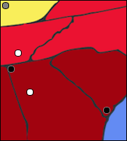
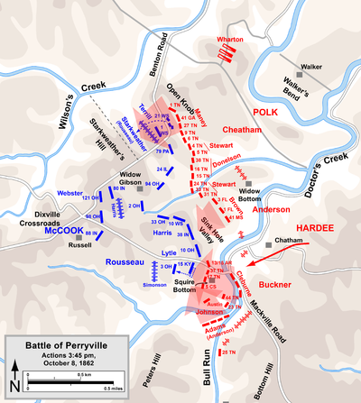
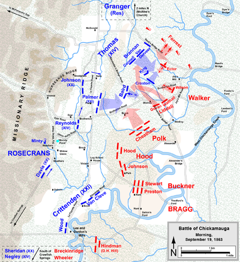
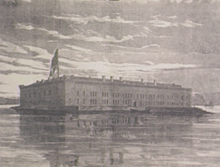

| Union | October 8, 1862 | Confederate |
|---|---|---|
Don Carlos Buell Alexander McCook | Commanders | Braxton Bragg Leonidas Polk |
| 22,000 | Strength | 16,000 |
| 4,276 | Casualties and Losses | 3,401 |
In early October, Bragg wanted to concentrate his troops at Versailles, Kentucky, but Major General William J. Hardee was in Perryville, Kentucky, being pursued by Federal troops and in need of backup. Bragg was obligated to help, as Perryville was ideally situated to prevent the Federals from taking the Confederate supply depot in Bryantsville. On October 7, Buell arrived in the Perryville area and learned that the Rebels were deploying their infantry. He planned an attack, the main objective of which was to eliminate the opposing force and gain control of the town. He also hoped to get some water, due to the drought that had swept the area. Although the attack had been originally planned for October 8, it was postponed to the next day because of a delay in his troops arrivals.
At dawn, a Union division marched up Peter's Hill, stopping just before the Confederate line. At noon, a Confederate attack forced back the Union left flank. They took a stand and counterattacked, but as more Rebel troops arrived, the Federals finally fell back. Buell had no knowledge of what was happening and didn't send any reserves, but two brigades stabilized the line, and the Confederates were halted for a time. Later, Federal troops threatened the Confederate left flank, and so Bragg retreated during the night.
After this battle, Kentucky was under Union control.

| Union | September 21-November 25, 1863 | Confederate |
|---|---|---|
| Ulysses S. Grant | Commanders | Braxton Bragg |
| 56,400 | Strength | 46,200 |
| 5,815 | Casualties and Losses | 6,670 |
Chattanooga, Tennessee was an important center for manufacturing iron and also connected Nashville, Knoxville, and Atlanta via railroad. In September 1863, William S. Rosecrans and the Union army forced Bragg and his army to retreat from Chattanooga to northern Georgia. Rosecrans pursued Bragg, and they fought in the battle of Chickamauga. During the battle, a hole appeared in the noon line, and the Confederates went right through, routing the Federals. Only a defense by George H. Thomas on Snodgrass Hill kept the Union army from being completely destroyed; they instead retreated to Chattanooga. They took advantage of the Rebels' previous work, fortifying defenses and building strong defenses around the city. Bragg had three options flank the army (from above or below), attack them front on, or lay siege to the city. As the first two options were impossible due to troop restrictions, he chose the third. He knew that they only had six days of rations.
Rosecrans was stunned by the loss of Chickamauga and was psychologically unable to command his troops, even to leave the siege. Their only supply line was a long, hard route that was made near impossible to travel due to heavy rain. Secretary of War Edwin M. Stanton was desperate to free the city, and sent in over 35,000 troops as reinforcements, including Grant and his Military Division of the Mississippi. Grant replaced Rosecrans with the same George H. Thomas who had saved the army at Chickamauga. In mid-November, the Union army began offensive preparations. On November 23, 24, and 25, the Federal troops attacked and routed the Confederate army.
The Federals had taken control of "the Gateway to the South." It would later become the base for Sherman's 1864 Atlanta Campaign.
| Union | September 19-20, 1863 | Confederate |
|---|---|---|
| William Rosecrans | Commanders | Braxton Bragg |
| 60,000 | Strength | 65,000 |
| 16,170 | Casualties and Losses | 18,454 |
In Rosecrans's Tullahoma Campaign in the summer of 1863, he forced Bragg to retreat all the way from Middle Tennessee, past Chattanooga, and into Northern Georgia. President Lincoln and General-in-Chief Henry W. Halleck then pressured Rosecrans to attack Chattanooga. Taking it would allow the Union army to move closer to the heart of the South, as it connected Nashville, Knoxville, and Atlanta via railroad. In early August, the Confederate War Department asked Bragg if he would be able to attack Rosecrans and his army, given reinforcements from Mississippi. Bragg rejected the idea, preferring that Rosecrans come to him instead. He was also concerned about another army near Knoxville, led by General Ambrose E. Burnside. Bragg placed his two infantry corps near Chattanooga, and relied on the cavalry to protect the flanks. The Confederates decided to give Bragg reinforcements from Virginia as well as Mississippi, and Bragg felt that he had the strength to attack the Union army after all.
The battle went on for a day with no clear winner. Each side would come up with a plan that would ultimately fail. Late in the morning of the 19, Rosecrans was told that he had a gap in his line. He hastily moved troops to fill in the hole, instead creating a new hole farther down the line. James Longstreet, a Rebel commander, and his troops quickly rushed through the new hole, forcing a third of the Union army (including Rosecrans) off the field and out of the battle. Only a defense by George H. Thomas on Snodgrass Hill kept the Union army from being completely destroyed; they instead retreated to Chattanooga.

| Union | April 12-14, 1861 | Confederate |
|---|---|---|
| Robert Anderson | Commanders | P. G. T. Beauregard |
| 85 | Strength | 500-6,000 |
| 0 | Casualties and Losses | 0 |
On December 20, 1860, South Carolina seceded from the United States. By February 1861, six other states had joined it. On February 7, the seven states (South Carolina, Mississippi, Florida, Alabama, Georgia, Louisiana, and Texas) created a new Constitution for the Confederate States of America. Forts in Charleston's harbor, like Fort Sumter, were not immediately claimed to be under Confederate control. Fort Sumter was supposed to be one of the most secure fortresses in the world. During the night of December 26, six days after South Carolina seceded, Anderson quietly relocated his forces from Fort Moultrie to Fort Sumter, under orders from Secretary of War John B. Floyd. South Carolina governor Francis W. Pickens then retaliated by ordering troops to sieze all Federal positions (including the other forts) except for Fort Sumter. The winter was very hard for the Union troops. Rations were short and warmth was scarce; the troops were scrambling to complete the defenses, only 90% finished. In March, Beauregard took control of the South Carolinian forces. He assembled a wide assortment of weapons at the forts under his command, in addition to having 6,000 men ready to fight.
On April 10, 1861, Beauregard ordered that the Union soldiers surrender. Anderson refused, and on April 12, the Confederate forces opened fire. Due to a lack of men and preparation, the Federals were unable to return fire effectively. At 2:30 p.m., April 13, Anderson surrendered the fort. He and his troops evacuated the next day.
This was the first battle of the Civil War. Charleston Harbor remained under Confederate control for nearly the entire duration of the war.
